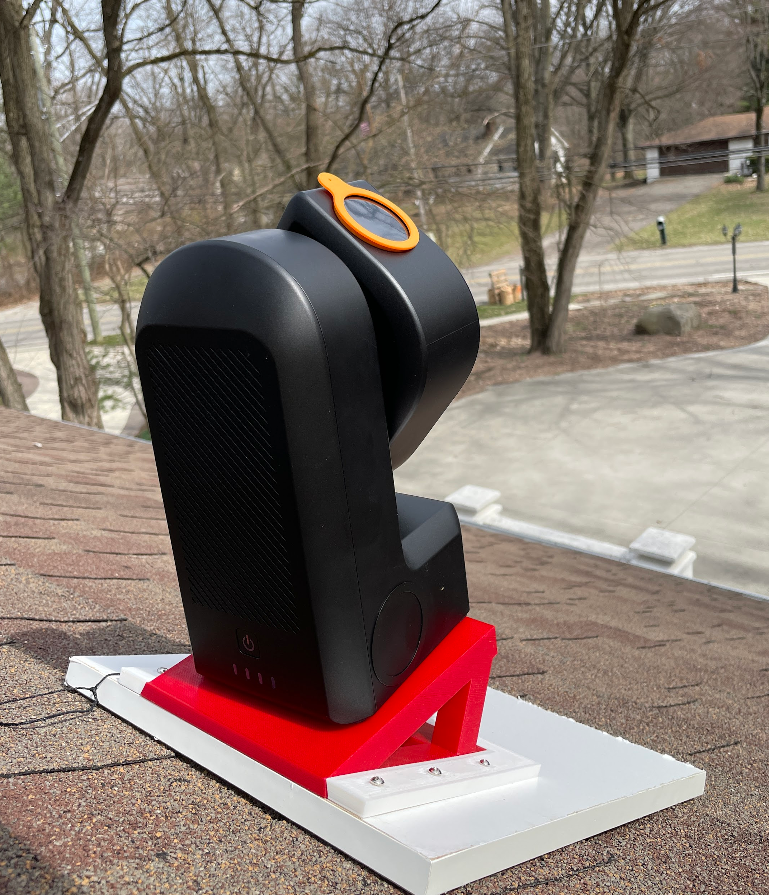

Exploring the cosmos from my urban observatory

All of the images on this website were taken with my Seestar S50. Most of them from my roof in a suburb of Columbus, OH.
There is a lot of light pollution and trees, so some targets can be tough, but I am blown away by what I have been able to capture.
This site is mostly just for me. It seemed like a fun project and gives me something to do with the images I capture. If you find yourself here and you are not me, I hope you enjoy it!
Browse my complete collection of astrophotography images and videos.
View Full Gallery